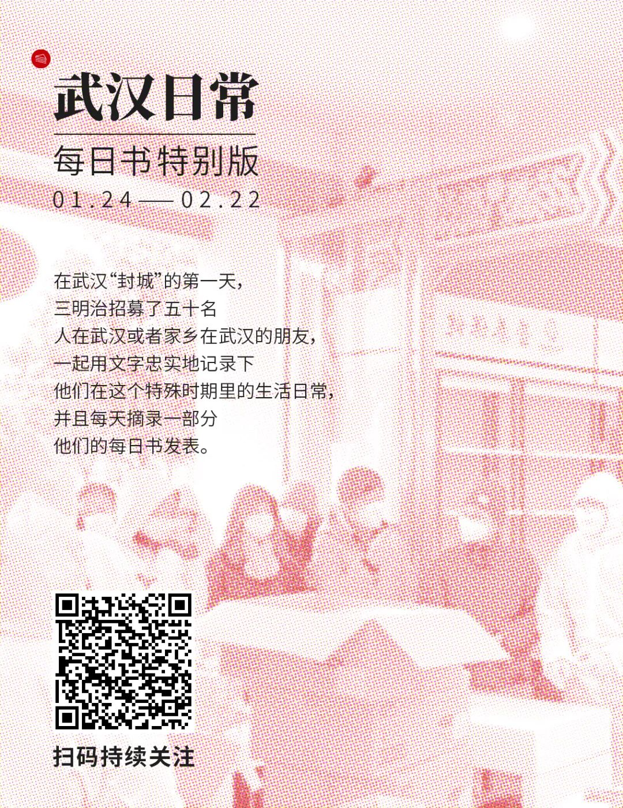

疫区日记 ｜我厌恶这样的懦弱
原文链接 备份链接 自武汉爆发新型冠状病毒疫情之后，多个国家组织起撤侨工作。对于拥有跨国婚姻的人而言，此刻是与家人一同撤离，还是坚守在国内，成为十分痛苦、但又不得不做出的决定。单读作者晓宇就是其中的一员，他的妻子、拥有英德双国籍的安娜， …

文 | 三明治016
车子缓缓驶近村口。
一根彩带揉搓成的细长绳子，挂在门口两个石狮子上，挡住了进村的路。
因为新型冠状病毒影响，正月初七这天，往年返京最高峰的日子，北京多个村庄、多个社区却相继曝出拒绝租客进门的规定。
我租住的这个郊区的村子，也于当天早上9点，通过喇叭，向村民们宣告了封村的消息。
而我得知这个消息时，我和老公、孩子，正坐在开往北京的高铁上。
就在高铁开动不到1个小时前，村委会工作人员还热心询问我们是否坐上返程的车，回村后一定记得居家隔离14天，并跟我们再次核对了返村登记所需的身份证等信息。
在此之前的春节假期，村委会工作人员每天若干个电话，询问我们的身体状况是否有症状，建议推迟返京，如需返京，承诺做好居家隔离14天。
我们俩都彻底懵了，浓浓的尴尬，还来不及细细品味身为老北漂的无奈和心酸。
不行，得沟通、得争取——
“我们已经在去的高铁上了，在老家一直在自我隔离，没有接触过任何湖北人，这些天体温正常、身体没有任何不适，能不能通融下？”
“我们也是接到上级部门通知，现在疫情很严重，请理解并配合我们的工作。”
“突然说封村，我们带着小孩毫无准备，住酒店不方便，能不能特殊放行？”
“非常理解你们，但我们也没办法，您不要为难我们，我们只是执行，也没有办法。”
……
几番求情沟通，仍然无果。
此时，附近几个村子的新村民（何谓新村民，我稍后解释）组成的沟通交流群里，开始讨论这件事。明显分成两派：
一派反对彻底封村，尤其要去城里上班的，出去了还能不能回村住？
一派支持目前的封村，A觉得这是法律条文，应该遵守（但找不出相关条例）；B听说其他地方有武汉感染者不通报不做防护导致传染多人，觉得北京宁可错杀一千，也不能让任何一个可能携带病毒的来到帝都；仍在老家的C觉得这是特殊时期，大家都应该识大局，不能回家也要理解，自己会主动改票延期回京。
两派都有自己强烈不可撼动的立场，只会争得面红耳赤，却根本不可能说服对方。
朋友圈里也开始转发天通苑等小区租户、业主有家不能回的新闻，讲述着深夜回到小区门口不能入而改住酒店的尴尬故事。
看完这些消息，我更觉无助。
一个在北京学习工作生活了15年的人，虽然身份上没有官方证件，但在心里，自认为和这里有着特殊的关联和情感。
但此刻，想回自己的“家”，却变得如此狭隘。
看着身边这个五大三粗的男人，也就是我老公，脸憋得通红，对着手机的聊天记录，眼神望向空无，他在拼命想办法。
“你快一起想想，商量一下咱们该怎么办？是继续返京？还是我们下一站就下车，我赶紧看看买返回的票还有没有！”他开始搜索回去的票，也去跟乘务员询问是否能退掉接下来行程的票钱。
我寻摸着，如果回老家——又将被隔离14天，又将是无聊到长霉的14天。如果回北京——住酒店没办法做饭，但又要隔离可怎么办？没带足够尿不湿，想着马上回家，就只带了路上用的，孩子晚上尿床怎么办？往返高铁票3500块钱（为了少接触人，买了一等座），这笔钱就这样打水漂了？
满脑子飘过的都是些琐碎的担忧，也想好好冷静下来想一想，但身旁2岁多的孩子，正哭闹得厉害。
她本就不理解为什么一直要戴口罩，这个东西勒得紧让她很不舒服。她发现吃东西可以不用戴，不断提出要吃零食，我不让，她生气地连续破坏了5个口罩（每个10-30元之间）。我把包里剩下不多的儿童口罩（还要面对接下来的疫情）拿出来，仍然希望她能戴上。
我也不知道这种坚持对不对，或许口罩少戴一会儿没事？但，身边时不时有人走过，万一就这么一会儿没戴，感染上了呢？
路上带着这么小的孩子，意味着高风险，所以我更不想返回老家后，然后再来一遍返京之旅。这一次无论多难也要想办法回北京的“家”。
这个家，尽管是租来的，却是让我们一家三口感到无比安心的所在。
这里位于距离市中心1-1.5小时车程的郊区农村，和附近几百户城里搬来的孩子家长、艺术家、设计师一样，我们也属于“新村民”。因为向往着有院子的生活，把农民几乎废弃的平房租下来，自己装修、改造。
是的，你可能想到了李子柒，虽然没有那么美好，但对于我们自己来说却是个近乎乌托邦的“家”和社区。
我们俩就租了一个不大的院落，全家自动称呼它为“小院子”。虽是租的，却是我们理想中家的样子，也是在北京漂了这么多年后第一次感到像自己家的一个房子。相较于此前租过的n套房子，最重要的，这里终于有了足够大的空间，可以腾出孩子专门的房间，放满了她的玩具、绘本、运动器械。
相比较在老家父母的房子里，虽然被照顾周到，过着饭来张口衣来伸手的日子，却十足地像猪一样。我爸妈的房子，所有都围绕客厅里的电视和茶几来设计。一家人整天就聚坐在茶几前，开着电视，不停地吃着零食。本带着电脑想处理些工作，也毫无心志。
此次一回老家便没出过家门地自我隔离了10天，无聊可以忍受，最不能忍的是孩子跟着大人长时间看电视、吃零食。但在父母的家，我自己也像一个失去正常功能的巨婴，像黏糊糊地瘫在地上的一坨烂泥一样，恐怕只有回到北京的家，才能把孩子原本规律健康的生活找回来。
以及，既然要回去，趁着真正的返程高峰之前回去更好，人少减少被感染的几率。事实证明也如此，高铁上1整节车厢内只有我们仨。

说回到高铁，在我做好了回父母家隔离14天的心理准备时，我老公打完电话回来，又憋得脸通红，但这次明显不同，眼神里放着光。他说：村子里新的通知开始松口，说“如有特殊情况可以回村”，咱们带着孩子已经在路上，被领导审核通过属于“特殊情况”。
虽然有关部门的通知是要求封闭村庄，但村干部最终还是考虑到我们的特殊情况，允许我们体温正常可以进村，且承诺不外出，居家隔离14天。

心里那个高兴啊。
到了北京，朋友得知我们回来，支援了我们一批防疫物资，口罩、消毒液、消毒湿巾…她把物资交接给我们时，隔着玻璃跟孩子打招呼，后来她说，看得这么小的孩子这么乖地戴着口罩有点泪目，不容易。

北京的地铁空空荡荡，路上车也少，本来要开起码1.5小时的车程只开了30分钟了。
当我们的车子驶向村口，看着那一条低垂的脏旧的拦着的线，旁边几个戴着口罩的中年男子，拉起了线，把我们放行了，放行了，放行了。
推开家门那一刻，深深吸了一口气，真好啊。
一位邻居知道我们回来了，怕我们来不及做晚饭，特意做了菜给我们送来；还有一位邻居怕我们没时间买菜，把自家的蔬菜分了一部分放在了我家门口……

晚上又看到新闻，民政部说“北京没有全封闭社区”，遇到不让进的社区可以拨打投诉热线。
千万的北京外来务工人员，终于都可以放下悬着的心，家是可以回的，不管是买的家，还是租来的家。
这也像一场短暂的闹剧，可能很快会被遗忘。只有深夜被赶到酒店住的人，以及像我们这些身处其中的人，能更深地体味一刀切的冰冷政策，以及更深度的体会，是如此凉薄的世情。
我甚至想，如果情节反转一下，一个高传染的村子，尚未被传染的村民都想逃离，但是规定说只允许外地人撤离，本地人必须留守。
如果你恰好是这个本地人？
这个情节背景，像极了当下的武汉。
真的心疼武汉人啊，没有吃野味的武汉人，对生活充满希望的武汉人，对家人认真负责的武汉人啊。他们无处可去，到哪里都变成“过街老鼠”。他们心里有再大的委屈，不能，也不敢抱怨，因为这是“不正确”。有些武汉人“竟然”选择隐瞒自己的行程？但，正是因为被歧视，促使了他们选择隐瞒。
其实，每一个人都有可能成为“武汉人”，也都有可能成为“外地人”，只是此刻，很多人没有意识到。
我写这篇文章，不期望改变或说服谁。只是想起《了不起的盖茨比》中的一句话送给自认为永远是“本地人”的朋友，因为今天我也才更加懂得这句话：当你想批评别人时，请记住，并不是世界上所有人都和你有一样的条件。



《“冒昧问一句，你这次回国没去过武汉吧？” | 美国南部的“肺炎”日记》

原文链接 备份链接 自武汉爆发新型冠状病毒疫情之后，多个国家组织起撤侨工作。对于拥有跨国婚姻的人而言，此刻是与家人一同撤离，还是坚守在国内，成为十分痛苦、但又不得不做出的决定。单读作者晓宇就是其中的一员，他的妻子、拥有英德双国籍的安娜， …
原文链接 备份链接 本文作者是一名报社的实习记者，得知肺炎疫情严重之时，她决定回到家乡武汉，跟家人在一起。她日夜感受病毒是如何改变着、影响着武汉人的生活，并决定记录下周围发生的故事。在今天这篇“武汉日常”每日书中，她采访了一位朋友，他的处 …
原文链接 备份链接 🎧 点击上方图片，跳转「故事FM」小程序，收听真人讲述。记得添加「我的小程序」，一键收听全部故事哟！ 故事FM 前几天采访的武汉人，都是目前身在武汉的武汉人。但我们知道，现在散布在全国各地的武汉人，甚至湖北人，都在主动 …
原文链接 备份链接 非常时期，武汉成了全国人民挂念、祈福的城市。封城后，武汉人民的真实生活是什么样？ 正和岛自1月26日起特别推出《叶青：我在武汉疫区的第N天》专栏。叶青是一位定居武汉40年的市民，也是一名学者和官员。接下来的一段时间，他 …
原文链接 备份链接 大家好，我是田静。 疫情爆发最严重的那几天，我家的亲戚被隔离了。 听到消息后家里人都吓得不轻。原来是亲戚小龙春节前去过武汉一晚，回来后就发烧、胸闷、呼吸困难，在老家农村，只能监管，不能诊治。 每天在家隔离，实时向当地村 …